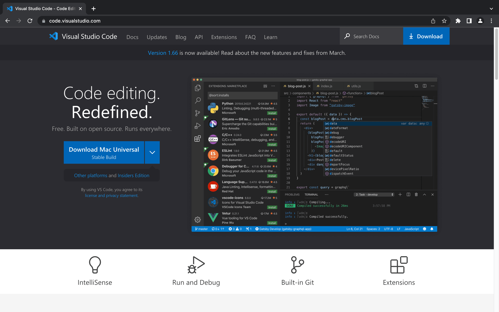
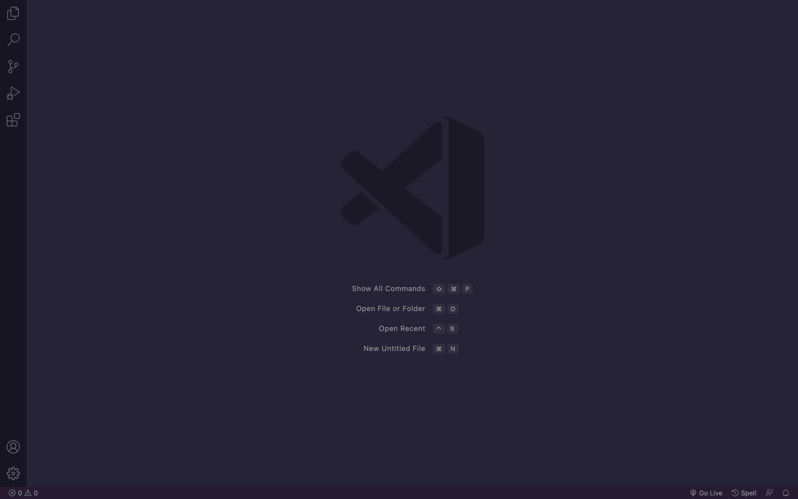
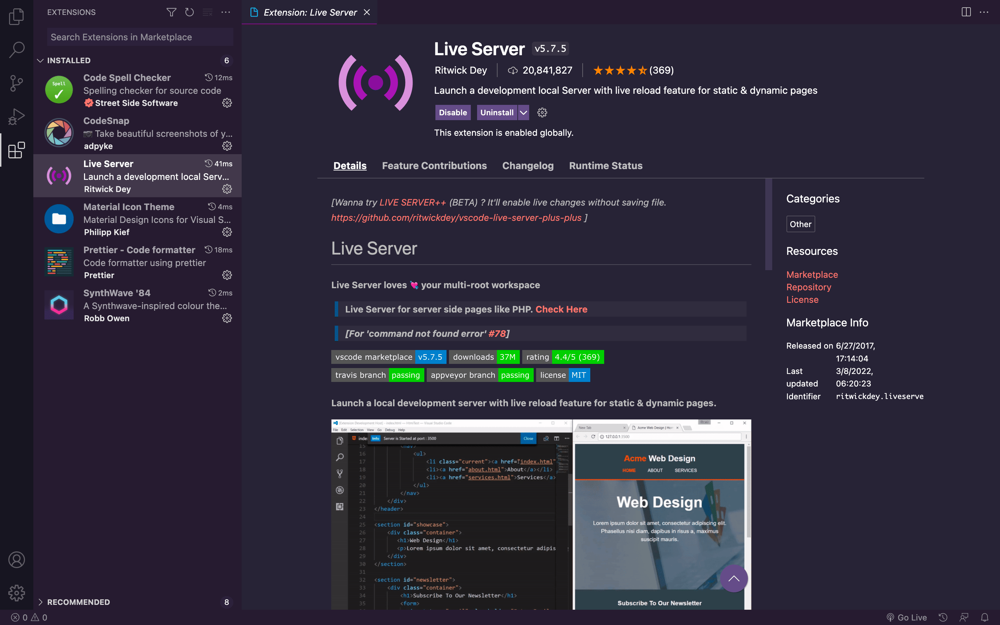

If you're trying to learn web development or just programming in general, it's crucial to have a proper environment set up. Just like a woodworker has a shop full of tools they use, a developer needs an environment where they can write code in a productive and efficient manner.
As a beginner, it can be quite overwhelming to see all kinds of technical jargon being thrown around; frameworks? Package bundlers? APIs? What does all this stuff even mean? Luckily, you don't have to know a lot of these concepts when you're first starting off. Additionally, programming is a topic as broad as the ocean — in other words, you'll never be able to learn every single technology in a lifetime, so don't feel obligated to know everything.
With that out the way, let's dive into what exactly you need when setting up your very first development environment. As a developer, it's pretty obvious that you'll be writing code 90% of the time. So ideally, you want to make sure you have a proper text editor; the last thing you wanna' do is write an application in Notepad. This is where IDEs come in.
IDEs
An IDE (integrated development environment) is a software application used for writing computer programs. Most IDEs come equipped with a source code editor, build automation tools, and a debugger. In a nutshell, IDEs are text editors on steroids. One of the most popular IDEs out there is Visual Studio Code; VS Code is a source-code editor created by Microsoft, and it's pretty much the standard amongst the programming community.

...unless you're a complete caveman, downloading software shouldn't be rocket science, so go ahead and download VS Code for your corresponding operating system. After you've installed it, open it. Once you're in, you should be presented with something like this...
...now, you're probably wondering why your screen looks so plain compared to mine... the answer is simple: I'm using the SynthWave '84 theme, which can be found in the Extensions tab (the icon with the four blocks on the left side).
Extensions
Part of what makes VS Code so powerful is the ability to easily customize everything to suit your needs. A great example of this is VS Code Extensions, a marketplace where you can easily install third-party plugins. Here's a look at a few of the Extensions I have installed:
...as you can probably tell, I'm quite the minimalist — my plugins consist of a UI and icon theme, a code formatter, a spell checker, and a local server. What's a local server, you ask?
Local Servers
The great thing about web development is the ability to see your code come to life. The simplest way of doing this is by opening your file,
which opens the local file. You can tell the local file is being used because the web address path will start with
file://. The problem with this method is that some files won't run if you open them as local files.
To get around this problem, most developers run their programs through a local web server. A local server is pretty self-explanatory: it's just a server that runs on your local machine. There's different ways to set up a local server, but as a complete beginner, using Live Server is by far the easiest. Live Server is a VS Code Extension that automatically creates a local server for you. Install it.
Testing Out Your Environment
Now that you have everything set up, you can finally test out your environment. Hit
Command + O (Mac) or Ctrl + O (Windows) to
open a new file. Create a file with the .html extension anywhere on your
machine and open it.
Traditionally, every HTML file requires a boilerplate, which looks something like this:
<!DOCTYPE html>
<html lang="en">
<head>
<meta charset="UTF-8">
<meta http-equiv="X-UA-Compatible" content="IE=edge">
<meta name="viewport" content="width=device-width, initial-scale=1.0">
<title>Document</title>
</head>
<body>
</body>
</html>
...imagine typing that out every single time you made a new file — that would be tedious! Luckily, VS Code comes pre-installed with a plugin
that makes this a breeze. Type ! into the workspace and hit Enter. Pretty convenient, right?
Finally, you'll want to test out the Live Server extension. On the bottom-right of the window, there should be a small
button that says "Go Live"; click this button to start your local server. The page is empty right now since there's no
content in the HTML file, but you can tell you're on a local server because the web address path should say
http://localhost:8080 or 127.0.0.1:5500.
...and that's it! Any changes you make to your file will now show up automatically on your local server. You're now ready to start developing.